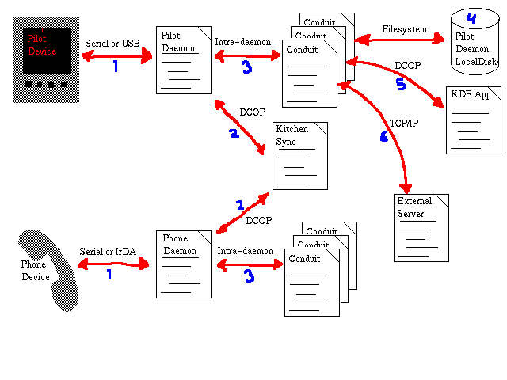

The following diagram shows which programs (pieces of paper), devices (grey images), data files (disk drums) and communication lines (red arrows). Communication lines are annotated by the protocol that is spoken along them. Blue numbers in the diagram refer to the list following.
A daemon talks to the device corresponding to it through some kind of physical communication protocol.
The daemon keeps KitchenSync informed of what is going on during the Sync by DCOP calls.
A daemon can contain several conduits, with which it communicates through some kind of intra-daemon protocol. This might be DCOP, might be the old-fashioned KPilotLink protocol, or it might be shared libraries called from the daemon code.
Each conduit is responsible for some part of the data in the device. All the conduits together should be able to backup and restore all the data in the device.
A conduit might store data into a file that is a straightforward binary copy of the device data.
A conduit could communicate with a KDE application through DCOP. Some conduits might commuicate with Keeper, the future KDE-PIM server.
Still other conduits might communicate with external servers, processes, pipes, whatever. A mail-sending conduit comes to mind here.
Note that one conduit might use more than one data storage method. For example, a conduit for the address book in the daemon for a Palm pilot device might store addresses through DCOP in KAddressBook, but some Pilot-specific data -- such as category information -- would have to be stored on local disk.